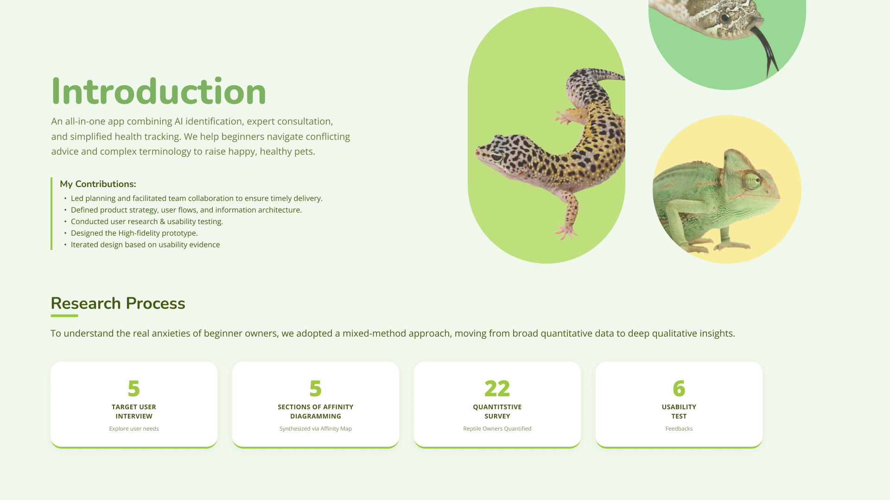
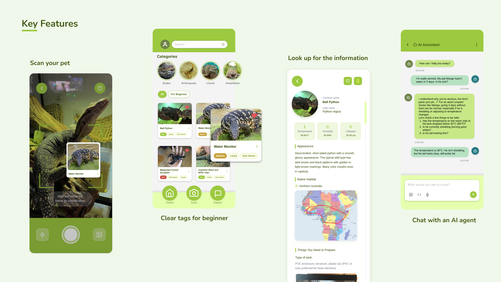
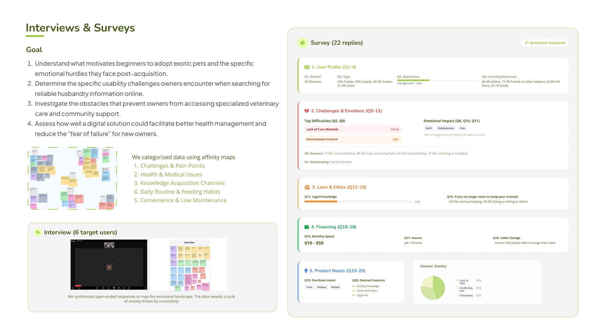
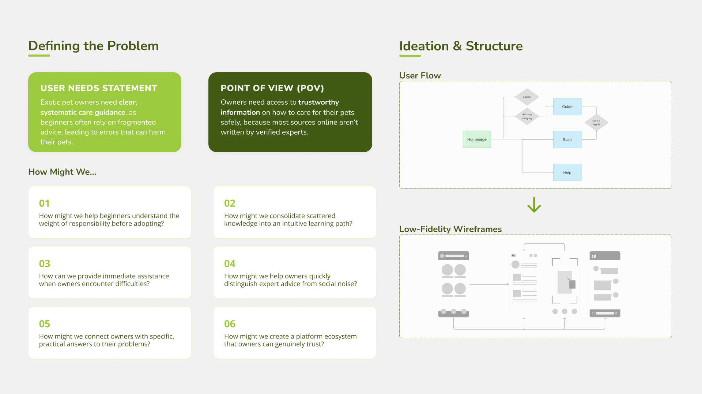
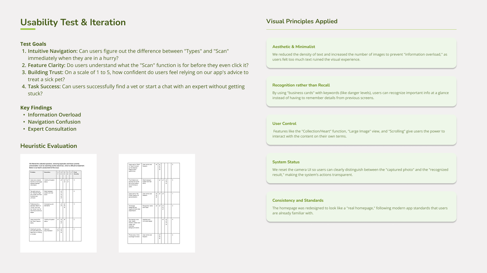
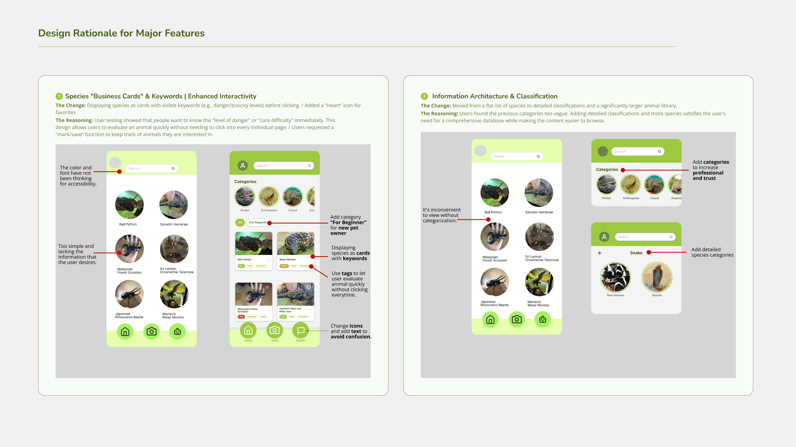
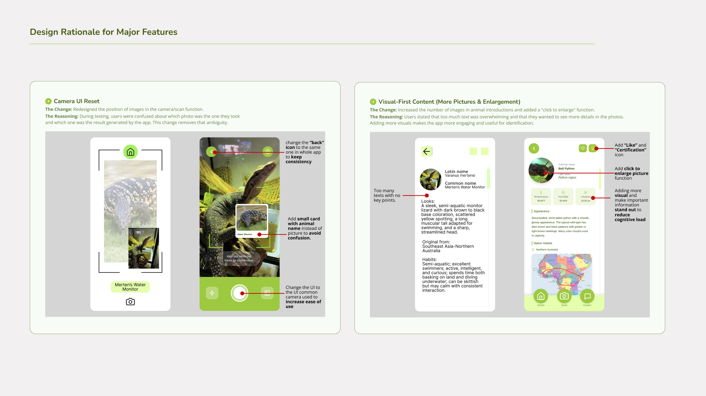

Exotic Pet








Prototype Showcase
Reflection & Growth
In the design part, I grew by learning to use evidence-based iteration to drive my design decisions. Initially, I focused on building the app based on our research part and group assumptions, but usability testing revealed critical issues we hadn't considered. Based on these test results and design principles, I iterated the prototype, switching to a more professional "deep green" palette and establishing a clearer hierarchy to improve usability. I realized that design is not just about aesthetics, it is a process of using real feedback to create a tool users can confidently rely on. Anyway, I'm very glad to have collaborated with my classmates on this project. I really enjoyed discussing these UX strategies with the group members, features, user flows, and the iteration.
Future Roadmap
- Reduce Cognitive Load: Further refine the minimalist approach to ensure information is instant and stress-free.
- Community Integration: Explore features that connect beginners with vetted experts safely.
- Accessibility: Ensure the app is fully usable for owners with varying visual or motor abilities.